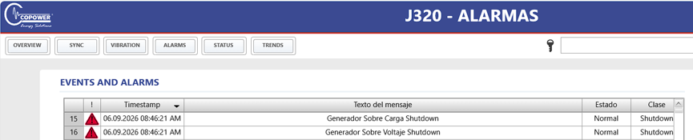

Salida de línea de CPW-07 el 06-09-2026 en Costayaco, en isla. El AGC registra dos shutdowns el mismo turno:
08:33:52 (P = 900–923 kW) y 08:45:01–08:45:11 (P = 738–824 kW). A las 08:38:35 aparece Any DG missing / CAN ID 25 caído.
Reingreso real con GB ON a las 08:48:54. El flash de operación (parada 08:45 / arranque 08:52) solo cubre el segundo disparo.
Entre ambos trips el interruptor abre y cierra varias veces (08:36, 08:37, 08:39, 08:40, 08:43).
Antecedente: el mismo modo P> → U> → Shd Comun IE650 se repite en el log de agosto–septiembre.
Descripción de la falla
A las 08:45:01 el AGC dispara 1450 P> etapa 1 (738 kW, 924 A, 464 V). Ocho segundos después, 1460 P> etapa 2 (824 kW, 1033 A).
A las 08:45:11, ya sin corriente, aparecen 1160 G U> (542 V) y 3000 Shd Comun IE650.
DIA.NE registra en paralelo Generador Sobre Carga Shutdown y Generador Sobre Voltaje Shutdown (08:46:21; desfase de reloj ≈ 1 min).
El sobrevoltaje ocurre con I = 0 A: es el rebote de isla al abrir el interruptor, no la causa.
La tendencia de knocking (cilindros 1–20, 08:40–08:52) sube desde ≈ 08:44 y pica al shutdown: detonación generalizada.
Doce minutos antes ya había un shutdown idéntico a 923 kW.
Análisis de la falla
Causa raíz: deterioro / obstrucción del intercooler y suciedad en la válvula turbo bypass, con carcasa de admisión averiada.
El motor entra en knock, no sostiene carga y el AGC dispara P>.
Lo confirma la prueba posterior: opera estable ≈ 7 h y vuelve a oscilar al superar 600 kW; se inspecciona intercooler y se encuentra obstruido por deterioro.
El relato de “incremento súbito de demanda en isla” no explica el trip de las 08:33 ni el knock previo.
El CAN missing de las 08:38 puede haber sumado un escalón al segundo trip; no explica la recurrencia ni la pérdida de capacidad bajo 600 kW.
Clasificación: falla imputable al grupo (admisión / intercooler). No es PF cliente. La protección actuó; el modo de falla es del equipo.
Acciones correctivas / preventivas
ElectrónicoEléctricoHidráulicoNeumáticoMecánico
Revisión de alarmas y eventos AGC en ventana 08:20–09:10. Desmonte y limpieza de válvula turbo bypass.
Pendiente toma de presión Compushet a la entrada del intercooler (tapón 1/4 NPT).
Carcasa de admisión averiada enviada a Bucaramanga. Reset de alarmas y reingreso 08:48:33–08:48:54.
No se cambiaron partes en sitio. Hasta el cierre del repuesto, no cargar CPW-07 por encima de 600 kW.
Pruebas de funcionamiento
Tras el reingreso se probaron con carga: estable cerca de 7 h y oscila al superar 600 kW.
Parada 08:45:11 · GB ON 08:48:54 · fuera de línea ≈ 4 min (0,06 h). El flash redondeó el arranque a 08:52.
Acciones de mejora
Ítem
Descripción
Responsable
Fecha
Cumplimiento
Seguimiento
1
Reparar / reponer carcasa de admisión e intercooler. No superar 600 kW hasta el cierre.
David Cornejo / O&M
06-sep-26
En curso
Repuesto en Bucaramanga
2
Instalar toma Compushet en entrada de intercooler y seguir knock / P> en AGC.
Técnico O&M Costayaco
sep-26
Pendiente
Facilidad 1/4 NPT instalada
PROCESO: GENERACIÓN DE ENERGÍA
FO-GE-033 No. 64 · EVIDENCIA
PÁGINA 2 DE 2
Soporte recortado a la ventana 06-sep-2026 08:20–09:10. No se adjunta el histórico agosto–septiembre del .xls; ese archivo queda en el expediente interno.
DIA.NE — shutdown sobrecarga y sobrevoltaje

Knocking cilindros 1–20 · 08:40–08:52 — la intensidad sube antes del segundo trip.